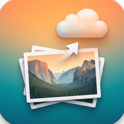
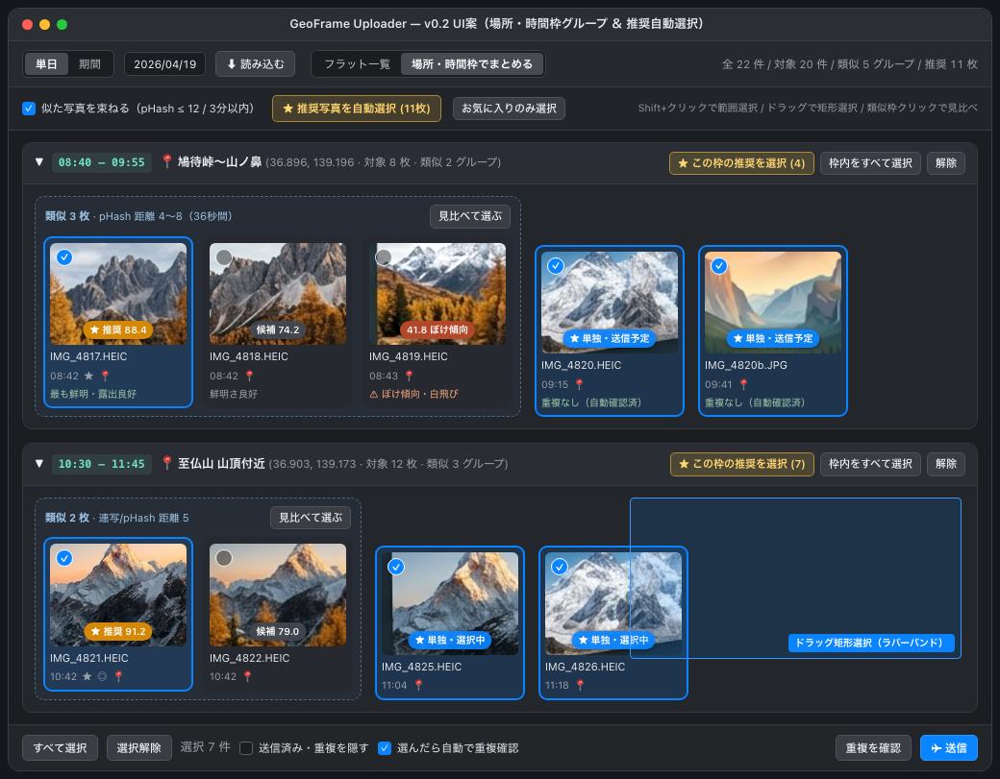
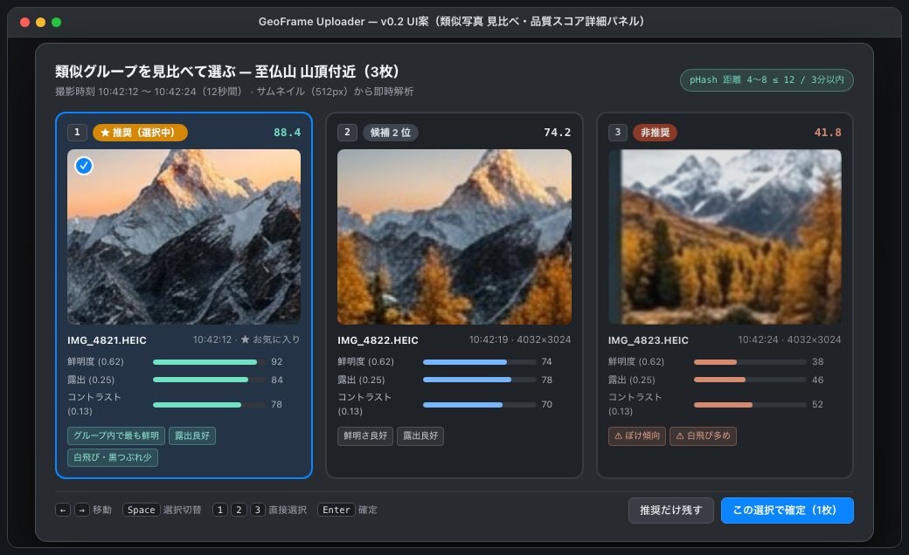
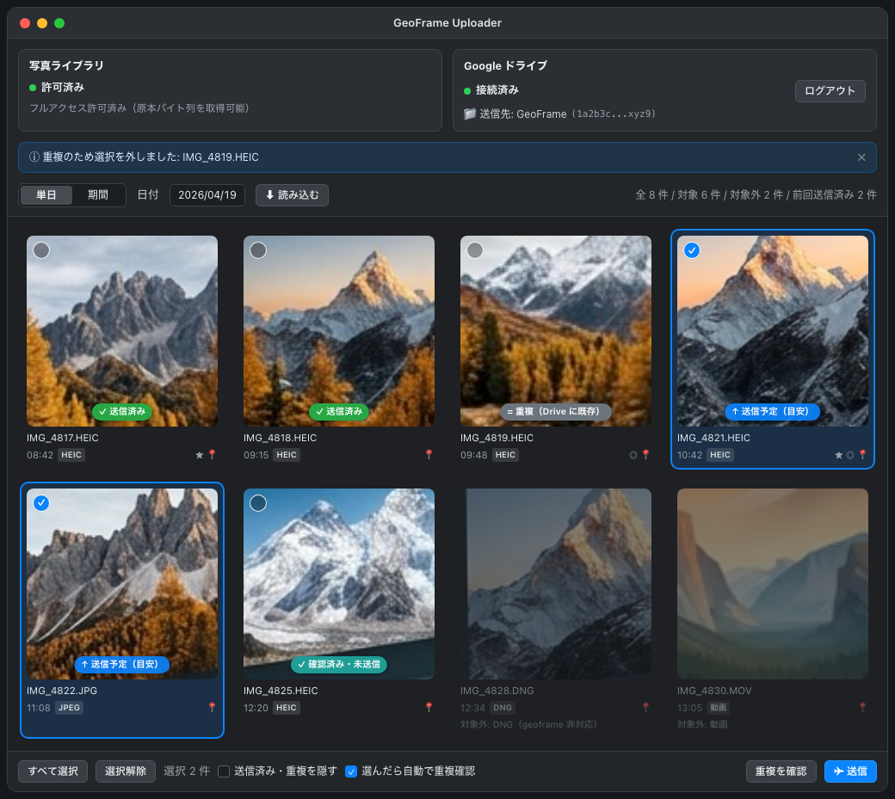
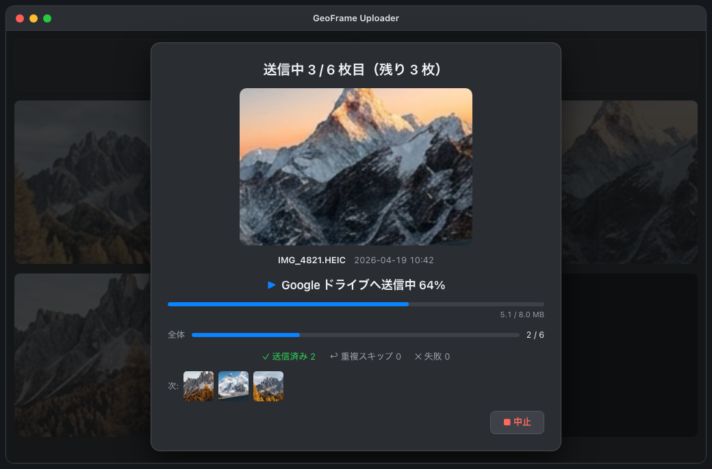
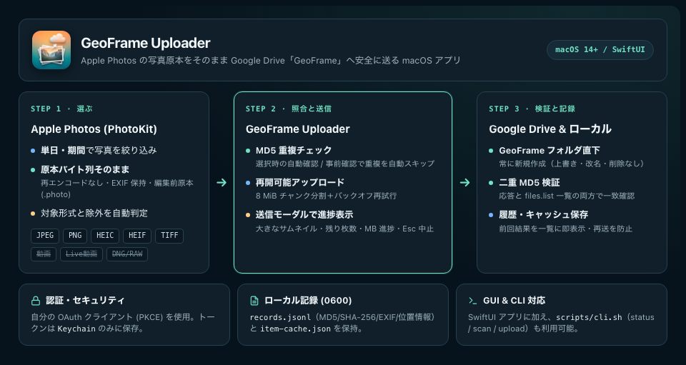
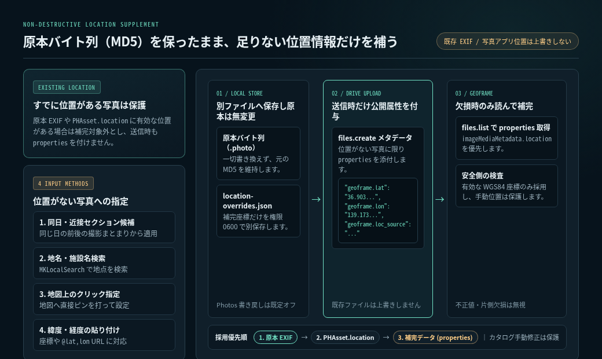

編集後も Live Photo も原本だけ
PHAssetResource の .photo リソースをそのまま書き出します。編集後の再エンコード画像（.fullSizePhoto）や Live Photo の動画部分（.pairedVideo）は送りません。

GeoFrame Uploader SWIFTUI / MACOS 14+ 位置補完対応（ソースからビルド）Original-byte PhotoKit to Google Drive
再エンコードしない。EXIF を削らない。同じ写真は二度送らない。
Apple Photos から日付で選んだ写真の原本バイト列を、Google ドライブ「GeoFrame」直下へ安全に届ける macOS アプリです。
GUI（SwiftUI）と CLI（scripts/cli.sh）の両方に対応し、1 枚ごとのハッシュと結果をローカルに記録します。
01 / Screens & Flow
一覧のバッジで前回結果が即座に分かり、
送信中は大きなモーダルで進捗を見守れます。


← / →・Space・1〜9・Enter のキーボード操作で素早く選べます。
見本画面




location-overrides.json に保存し、送信時だけ properties を付けて GEOFRAME 側で補います。
連携図
02 / Features
場所・類似写真での賢い絞り込みと、
検証・キャッシュ・安全停止を備えています。
PHAssetResource の .photo リソースをそのまま書き出します。編集後の再エンコード画像（.fullSizePhoto）や Live Photo の動画部分（.pairedVideo）は送りません。
撮影間隔（15/30/60 分）と移動距離（100m/300m/1km）で一覧を自動分割。「地名を表示」オン時は約 100 m 単位に丸めた代表座標から地名を表示し、枠単位の一括選択や Shift+クリック 範囲選択ができます。
512 px サムネイルで 64-bit pHash と品質指標（鮮明度・露出・コントラスト）を解析。バーストや似た写真を点線枠にまとめ、「推奨を自動選択」や拡大見比べパネルでベストショットを素早く選べます。
JPEG / PNG / HEIC / HEIF / TIFF だけを対象にし、動画・DNG・RAW・GIF などは薄く表示して理由を添え、選択対象から外します。
オンにすると、選択した写真をすぐに（約 0.3 秒後）バックグラウンドで確認します。MD5 を計算して Google ドライブの一覧（セッション内 5 分キャッシュ）と照合。重複が見つかった写真は自動で選択を外して通知します。
8 MiB チャンクの再開可能アップロードと指数バックオフ再試行を実装。404/410 でセッションが切れた場合は最初から安全に再作成します。
アップロード応答の md5Checksum に加え、files.list を再取得してファイル ID と MD5 の一致を確認。両方が通った写真だけを sent と記録します。
item-cache.json（送信結果・MD5・撮影日）・quality-cache.json（pHash と画質スコア）・place-cache.json（地名）を権限 0600 で保存。一覧バッジだけでなく、2ヶ月見開きカレンダー上でも過去の送信・確認履歴を一目で確認できます。
外部サーバーを介さず、自分の Google Cloud OAuth クライアント（PKCE + 127.0.0.1 ループバック）で接続。リフレッシュトークンは macOS キーチェーンにだけ保存します。
UploaderCore を共通化し、scripts/cli.sh から status / scan / auth / upload / signout を実行できます。GUI と CLI が同じ records.jsonl / item-cache.json を共有します。
同日・近接セクション候補、地名検索（MKLocalSearch）、地図クリック、緯度経度・@lat,lon URL から位置を指定し、location-overrides.json（0600）に別保存。原本バイト列と MD5 は一切変わりません。
原本 EXIF や写真アプリに有効な位置がある写真は対象外。位置が無い写真に限り送信時の Drive 公開 properties（geoframe.lat / geoframe.lon）を付け、GEOFRAME 側も EXIF 欠損時のみ読み取ります。
03 / Architecture & Ecosystem
GeoFrame Uploader は「送り手」に専念し、
GEOFRAME 側の既存の取り込みの仕組みにそのまま乗ります。
日付指定で一覧化し、512 px サムネイルで選択支援。送信時のみ .photo 原本から 1 パスで MD5 / SHA-256 を取得。
重複スキップ・再開可能アップロード・二重 MD5 検証・必要時のみ properties 付与。records.jsonl に履歴を保存。
マイドライブ直下に常に新規作成。上書き・改名・削除は一切行いません。
GEOFRAME が写真と properties を定期的に取り込み、Miharashi がキオスク画面へ美しく映します。
04 / FAQ
導入や動作仕様について、
気になりそうな点をまとめました。
いいえ。PHAssetResource の .photo（撮影時の原本バイト列）だけを送ります。.fullSizePhoto は使わず再エンコードもしないため、元の MD5 と EXIF がそのまま残ります。
いいえ。類似グルーピング（64-bit pHash）と品質評価は 512 px サムネイルだけを使ってローカルで計算し、quality-cache.json に保存します。原本の取得（または iCloud からのダウンロード）は「送信」や「重複を確認」を実行する写真に限られます。
オンの場合、セクションの代表座標を約 100 m 単位（小数第 3 位）に丸めた上で Apple のジオコーディングサービス（CLGeocoder）へ送信し、結果は place-cache.json に保存します。外部へ座標を送らず座標のまま表示したい場合は「地名を表示」をオフにしてください。
ありません。常に新規ファイル作成（files.create 相当）のみを行い、既存ファイルの更新・改名・削除は行いません。同じ MD5 のファイルがフォルダ内に既にある場合はスキップします。
はい。初回のみ、ご自身の Google Cloud プロジェクトで「デスクトップ アプリ」用の OAuth クライアントを作成し、oauth-client.json を ~/Library/Application Support/GeoFrameUploader/ に置く必要があります。手順は Google Cloud 側の準備 に詳しく書いています。
rclone の共有クライアント ID は廃止予定（rclone 公式ドキュメント）で、その対応に加え、rclone copyto による同名別内容ファイルの上書きリスクを避け、再開可能アップロード後の MD5 照合までアプリ内で完結させるためです。詳しくは Google ドライブ接続方式の評価と決定 に記録しています。
書き換わりません。原本バイト列と MD5 を保つため、補完座標は location-overrides.json に別保存し、送信時だけ Drive 公開 properties（geoframe.lat / geoframe.lon）として付与します。原本 EXIF や PHAsset.location に有効な位置がある写真は対象から外し、写真アプリへの書き戻し（既定オフ）も位置未設定の写真だけに適用します。
しません。重複判定の正は常に Google ドライブ フォルダの files.list にある md5Checksum です。キャッシュは書き出し省略と前回結果の表示高速化のために使っており、削除しても records.jsonl から再構築されます。
Read more
ビルド方法、CLI の使い方、詳細設計、Google Cloud の準備手順をまとめています。